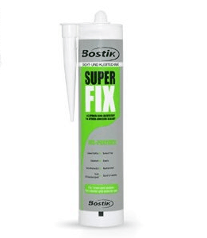

Особо прочный монтажный клей Суперфикс MS

Особо прочный монтажный клей Суперфикс MS представляет собой однокомпонентный клей на основе мс-полимера.Клей производится в Германии заводами концерна Bostik. Монтажный клей Суперфикс МС подходит для применения в условиях самых высоких нагрузок и обеспечивает длительное крайне прочное и эластичное соединение.
Суперфикс не содержит растворителей и не имеет запаха. В состав не входят силикон или изоцианат. Самый высокий класс безопасности. Клей полимеризуется за счет атмосферной влаги и при застывании образует гомогенную (однородную) массу без пузырей или полостей.
Суперфикс МС практически не дает усадки.
Клей характеризуется крайне высокой адгезией к большинству материалов. Бостик Суперфикс практически не подвержен разрушению от времени или естественных условий внешней среды. Не боится резких перепадов температур. Клей Суперфикс остается эластичным при отрицательных температурах (тестировался при -40ºС).
Суперфикс подходит для внутренних и наружных работ. Широко применяется в строительстве для монтажа фасадов, приклеивания пленок, панелей, отделочных материалов из камня. Также используется в производстве, например, для изготовления металлических контейнеров. Рядом автомобильных производств применяется для замены болтовых соединений (заводы Скания (Швеция), заводы Ламборджини (Италия)).
Суперфикс можно применять в морском судостроении. Клей успешно сопротивляется химически агрессивной среде. Суперфикс успешно используется в условиях постоянной щелочной среды, например, бани, душевые, ванные помещения.
Суперфикс МС может наноситься на влажную поверхность. Также клеем можно вести работы полностью под водой. Клей также допускает окрашивание лакокрасочными материалами, в ряде случаев не дожидаясь полной полимеризации. Из-за обилия разновидностей красок требуется производить предварительное окрашивание тестовой поверхности.
Bostik Superfix не требует специальной подготовки поверхности, кроме удаления пыли и грязи, очистки ржавчины в случае ее присутствия. Также требуется удалить жирные пятна.
Технические характеристики клея Суперфикс
| химическая основа |
силантерминированные полимеры, с нейтральными соединительными связями (MS полимер, SMP) |
| полимеризация | за счет влажности воздуха |
| цвет | белый, светло-серый, черный |
| удельный вес | ~1,5 г/см3 (DIN 52451 -PY) |
| время образования пленки | ~15 мин (+23ºС / 50% отн. влажн.) |
| время полной полимеризации | ~3 мм/24 часа (+23ºС / 50 отн. влажн.) |
| изменение объема | -3% (DIN 52451 -PY) |
| прочность при растяжении (для пленки 2 мм) | ~2,5 Н/мм2 |
| удлинение на разрыв (для пленки 2 мм) | ~400% |
| твердость по школе Шора | 55 (DIN 53505, 4 недели, +23 ºС / 50 % отн. влажн.) |
| максимально допустимая деформацияч шва | 10%, относительно наружной ширины шва |
| температурная стойкость | от -40 ºС до +100 ºС |
| температура при проведении работ | от +5 ºС до +40 ºС (температура строительных элементов) |
Нанесение клея Суперфикс
При помощи монтажного пистолета для клея (герметика) выдавить клей на основание. Толщина слоя клея Суперфикс при этом должна быть как минимум 2 мм, чтобы обеспечить максимально надежное эластичное склеивание. Швы должны быть заполнены полностью без воздушных промежутков. После полимеризации Суперфикс удаляется только механически.